The study of organic chemistry must at some point extend to the molecular level, for the physical and chemical properties of a substance are ultimately explained in terms of the structure and bonding of molecules. This module introduces some basic facts and principles that are needed for a discussion of organic molecules.
Four elements, hydrogen, carbon, oxygen and nitrogen, are the major components of most organic compounds. Consequently, our understanding of organic chemistry must have, as a foundation, an appreciation of the electronic structure and properties of these elements. The truncated periodic table shown above provides the orbital electronic structure for the first eighteen elements (hydrogen through argon). According to the Aufbau principle, the electrons of an atom occupy quantum levels or orbitals starting from the lowest energy level, and proceeding to the highest, with each orbital holding a maximum of two paired electrons (opposite spins).
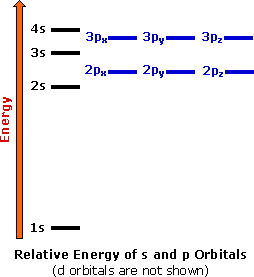
Electron shell #1 has the lowest energy and its s-orbital is the first to be filled. Shell #2 has four higher energy orbitals, the 2s-orbital being lower in energy than the three 2p-orbitals. (x, y & z). As we progress from lithium (atomic number=3) to neon (atomic number=10) across the second row or period of the table, all these atoms start with a filled 1s-orbital, and the 2s-orbital is occupied with an electron pair before the 2p-orbitals are filled. In the third period of the table, the atoms all have a neon-like core of 10 electrons, and shell #3 is occupied progressively with eight electrons, starting with the 3s-orbital. The highest occupied electron shell is called the valence shell, and the electrons occupying this shell are called valence electrons.
The chemical properties of the elements reflect their electron configurations. For example, helium, neon and argon are exceptionally stable and unreactive monoatomic gases. Helium is unique since its valence shell consists of a single s-orbital. The other members of group 8 have a characteristic valence shell electron octet (ns2 + npx2 + npy2 + npz2). This group of inert (or noble) gases also includes krypton (Kr: 4s2, 4p6), xenon (Xe: 5s2, 5p6) and radon (Rn: 6s2, 6p6). In the periodic table above these elements are colored beige.
The halogens (F, Cl, Br etc.) are one electron short of a valence shell octet, and are among the most reactive of the elements (they are colored red in this periodic table). In their chemical reactions halogen atoms achieve a valence shell octet by capturing or borrowing the eighth electron from another atom or molecule. The alkali metals Li, Na, K etc. (colored violet above) are also exceptionally reactive, but for the opposite reason. These atoms have only one electron in the valence shell, and on losing this electron arrive at the lower shell valence octet. As a consequence of this electron loss, these elements are commonly encountered as cations (positively charged atoms). The elements in groups 2 through 7 all exhibit characteristic reactivities and bonding patterns that can in large part be rationalized by their electron configurations. It should be noted that hydrogen is unique. Its location in the periodic table should not suggest a kinship to the chemistry of the alkali metals, and its role in the structure and properties of organic compounds is unlike that of any other element.
As noted earlier, the inert gas elements of group 8 exist as monoatomic gases, and do not in general react with other elements. In contrast, other gaseous elements exist as diatomic molecules (H2, N2, O2, F2 & Cl2), and all but nitrogen are quite reactive. Some dramatic examples of this reactivity are shown in the following equations.
Why do the atoms of many elements interact with each other and with other elements to give stable molecules? In addressing this question it is instructive to begin with a very simple model for the attraction or bonding of atoms to each other, and then progress to more sophisticated explanations.
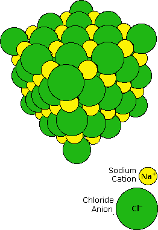 When sodium is burned in a chlorine atmosphere, it produces the compound sodium chloride. This has a high melting point (800 ºC) and dissolves in water to to give a conducting solution. Sodium chloride is an ionic compound, and the crystalline solid has the structure shown on the right. Transfer of the lone 3s electron of a sodium atom to the half-filled 3p orbital of a chlorine atom generates a sodium cation (neon valence shell) and a chloride anion (argon valence shell). Electrostatic attraction results in these oppositely charged ions packing together in a lattice. The attractive forces holding the ions in place can be referred to as ionic bonds. By clicking on the NaCl diagram, a model of this crystal will be displayed and may be manipulated.

The other three reactions shown above give products that are very different from sodium chloride. Water is a liquid at room temperature; carbon dioxide and carbon tetrafluoride are gases. None of these compounds is composed of ions. A different attractive interaction between atoms, called covalent bonding, is involved here. Covalent bonding occurs by a sharing of valence electrons, rather than an outright electron transfer. Similarities in physical properties (they are all gases) suggest that the diatomic elements H2, N2, O2, F2 & Cl2 also have covalent bonds. Examples of covalent bonding shown below include hydrogen, fluorine, carbon dioxide and carbon tetrafluoride. These illustrations use a simple Bohr notation, with valence electrons designated by colored dots. Note that in the first case both hydrogen atoms achieve a helium-like pair of 1s-electrons by sharing. In the other examples carbon, oxygen and fluorine achieve neon-like valence octets by a similar sharing of electron pairs. Carbon dioxide is notable because it is a case in which two pairs of electrons (four in all) are shared by the same two atoms. This is an example of a double covalent bond.
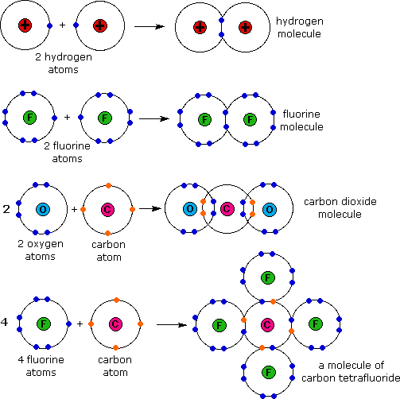
These electron sharing diagrams (Lewis formulas) are a useful first step in understanding covalent bonding, but it is quicker and easier to draw Couper-Kekulé formulas in which each shared electron pair is represented by a line between the atom symbols. Non-bonding valence electrons are shown as dots. These formulas are derived from the graphic notations suggested by A. Couper and A. Kekulé, and are not identical to their original drawings. Some examples of such structural formulas are given in the following table.
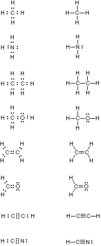
Multiple bonding, the sharing of two or more electron pairs, is illustrated by ethylene and formaldehyde (each has a double bond), and acetylene and hydrogen cyanide (each with a triple bond). Boron compounds such as BH3 and BF3 are exceptional in that conventional covalent bonding does not expand the valence shell occupancy of boron to an octet. Consequently, these compounds have an affinity for electrons, and they exhibit exceptional reactivity when compared with the compounds shown above.
The number of valence shell electrons an atom must gain or lose to achieve a valence octet is called valence. In covalent compounds the number of bonds which are characteristically formed by a given atom is equal to that atom's valence. From the formulas written above, we arrive at the following general valence assignments:
The valences noted here represent the most common form these elements assume in organic compounds. Many elements, such as chlorine, bromine and iodine, are known to exist in several valence states in different inorganic compounds.
If the electron pairs in covalent bonds were donated and shared absolutely evenly there would be no fixed local charges within a molecule. Although this is true for diatomic elements such as H2, N2 and O2, most covalent compounds show some degree of local charge separation, resulting in bond and / or molecular dipoles. A dipole exists when the centers of positive and negative charge distribution do not coincide.
A large local charge separation usually results when a shared electron pair is donated unilaterally. The three Kekulé formulas shown here illustrate this condition.
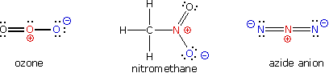
In the formula for ozone the central oxygen atom has three bonds and a full positive charge while the right hand oxygen has a single bond and is negatively charged. The overall charge of the ozone molecule is therefore zero. Similarly, nitromethane has a positive-charged nitrogen and a negative-charged oxygen, the total molecular charge again being zero. Finally, azide anion has two negative-charged nitrogens and one positive-charged nitrogen, the total charge being minus one. In general, for covalently bonded atoms having valence shell electron octets, if the number of covalent bonds to an atom is greater than its normal valence it will carry a positive charge. If the number of covalent bonds to an atom is less than its normal valence it will carry a negative charge. The formal charge on an atom may also be calculated by the following formula:
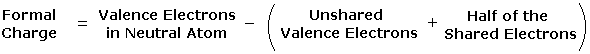
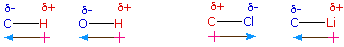
Although there is a small electronegativity difference between carbon and hydrogen, the C–H bond is regarded as weakly polar at best, and hydrocarbons in general are considered to be non-polar compounds.
The shift of electron density in a covalent bond toward the more electronegative atom or group can be observed in several ways. For bonds to hydrogen, acidity is one criterion. If the bonding electron pair moves away from the hydrogen nucleus the proton will be more easily transfered to a base (it will be more acidic). A comparison of the acidities of methane, water and hydrofluoric acid is instructive. Methane is essentially non-acidic, since the C–H bond is nearly non-polar. As noted above, the O–H bond of water is polar, and it is at least 25 powers of ten more acidic than methane. H–F is over 12 powers of ten more acidic than water as a consequence of the greater electronegativity difference in its atoms.Electronegativity differences may be transmitted through connecting covalent bonds by an inductive effect. Replacing one of the hydrogens of water by a more electronegative atom increases the acidity of the remaining O–H bond. Thus hydrogen peroxide, HO–O–H, is ten thousand times more acidic than water, and hypochlorous acid, Cl–O–H is one hundred million times more acidic. This inductive transfer of polarity tapers off as the number of transmitting bonds increases, and the presence of more than one highly electronegative atom has a cumulative effect. For example, trifluoro ethanol, CF3CH2–O–H is about ten thousand times more acidic than ethanol, CH3CH2–O–H.
Functional groups are atoms or small groups of atoms (two to four) that exhibit a characteristic reactivity when treated with certain reagents. A particular functional group will almost always display its characteristic chemical behavior when it is present in a compound. Because of their importance in understanding organic chemistry, functional groups have characteristic names that often carry over in the naming of individual compounds incorporating specific groups. In the following table the atoms of each functional group are colored red and the characteristic IUPAC nomenclature suffix that denotes some (but not all) functional groups is also colored.
Group Formula
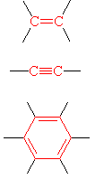
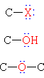
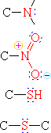
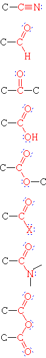
This page is the property of The Edvibe Team. Comments, questions and errors should be sent to contact@edvibe.co.ke. These pages are provided to the IOCD to assist in capacity building in chemical education. 05/05/2013